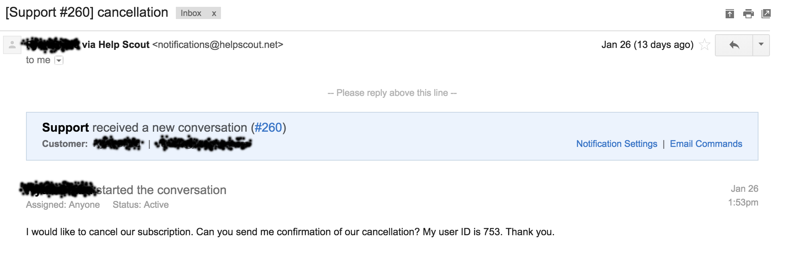

Keep your customer close and your churned customer closer
A couple of weeks ago, we got an email that no startup wants to receive:

I was devastated when I read it. Sure, it always sucks to lose a customer. But there are a few reasons why this one particularly stung:
- This was the first customer I ever actually sold Appcues to, so I had an emotional tie to them.
- Our champion at the company (the one who sent this email) was providing outstanding feedback on our product. We skyped with him often.
- They epitomized the problem that we're trying to solve by building Appcues. They want to improve user engagement and conversion, and are constrained by the size of their development team.
- They were actually using the platform. It wasn't as if they signed up and never really got started. They had used Appcues to create in-app experience seen by tens of thousands of users.
Good churn vs. bad churn
This email didn't actually come as a surprise. In December, our champion reached out to me to say they were looking into using one of our competitors. So we immediately set up a call to find out what was going on.
When we talked to them, it was clear: they weren't successful with Appcues. We had a half dozen things on our roadmap, but not yet in our product, that this customer really needed.
Churn is never a "good" thing. But there's certainly some churn that's better than other.
For example, there is always going to be churn that is beyond your control: a customer goes out of business, or gets bought, or shifts their strategy and no longer needs you. That's "good" churn.
Then there's the okay churn: a customer cannot afford your product anymore, or the internal champion leaves.
And lastly, there's bad churn: when a customer leaves because your product doesn't help them achieve their desired outcome.
This was bad churn. And that's why losing this customer hurt so much. We failed them. In fact, had we not built such a good relationship, this customer likely would've churned months prior.
Getting feedback at the exit
One of the primary reasons early stage startups fail is they build something that nobody wants. That's why it's so important to collect feedback from customers and potential customers all the time.
Perhaps there is no better opportunity for authentic feedback than when a customer leaves you. So when this customer left, we found out exactly why.
We've spoken to the customer a couple times since cancelling their subscription, and have learned quite a bit. We discovered deficiencies opportunities for improvement in our product. We learned more about their desired outcome, and what we'd need to change to help them reach it. We heard how they thought we were different than our competitor, and what they really liked about their product.
It's often said, "let customers vote with their wallets." Ours just did, but just because it wasn't the vote we wanted didn't mean that we could pass up the opportunity to learn.
How we learn from churn
In order to survive as an early stage startup, you must sell your vision, not your current capabilities. We often talk to prospective customers about features that don't exist yet, and investors about growth that hasn't happened yet.
In this situation, our customer lost the patience to wait for our vision to manifest. They needed capabilities today. And for that, I don't blame them.
It's easy to see this as a failure. But rather, I see it as an opportunity.
Our goal is to have zero bad churn: zero customers leaving because they aren't reaching their desired outcomes. By studying our churn early on, we can better understand it and avoid it later on down the road.
As the gap between our current capabilities and our vision shrinks, so too will the gap between our capabilities and our customer's expectations.
Every successful startup had assumptions they needed to change, pivots they had to make. And there's no better catalyst for change than having someone tell you they don't want to give you money anymore.
It sucks to no longer receive their revenue. But, in a sense, we've traded it for awareness and empathy. And this trade will (hopefully) allow us to close our gaps quicker, and build a better solution for our customers over the long run.
Churn won't always be an opportunity. But for now it is. And we intend to seize it.